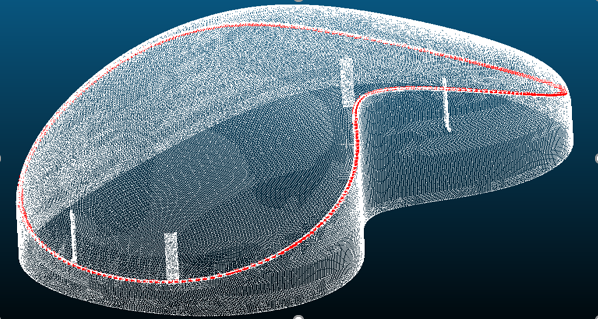
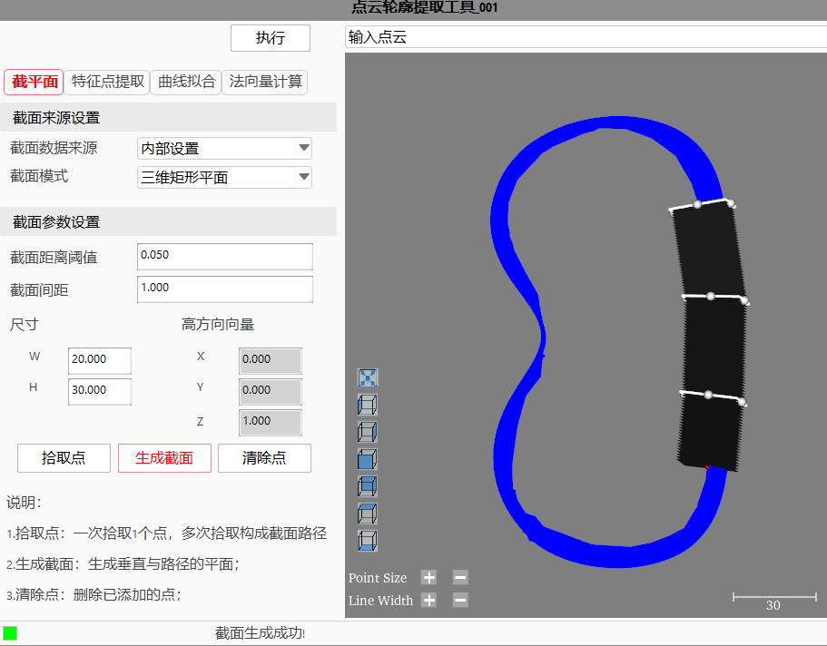
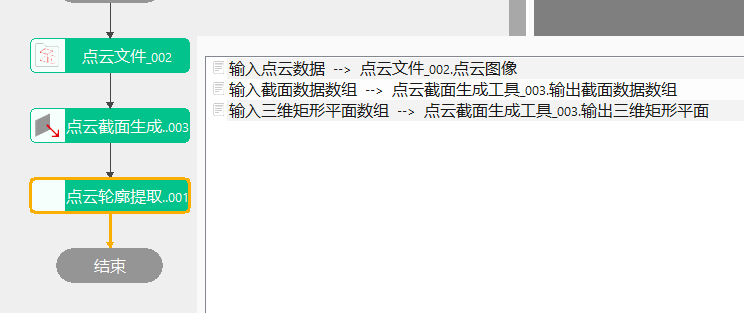

点云轮廓提取工具根据输入点云，截面生成位置，提取截面特征点作为轮廓点，并对轮廓点进行拟合和离散采样，最后计算对应法线。

点云轮廓提取工具主要用来获取目标沟槽的轨迹点及其法向量，提取的有序轨迹点用于点胶涂胶等场景，应用于视觉引导的轨迹规划。
step1：添加点云文件、点云轮廓提取工具，并双击打开工具参数链，链接点云文件；
step2：右击点云轮廓提取工具点击“属性”打开工具高级界面，设置多截面来源为内部设置，点击拾取点按钮拾取点集，点击生成截面按钮将拾取的点集按照顺序生成多截面的路径，如图3-1所示；
step3：点击执行按钮，即可根据路径进行多截面生成，然后再进行点云轮廓提取；

step1：添加点云文件、点云截面生成工具、点云轮廓提取工具，并双击打开工具参数链，链接点云文件；
step2：在点云轮廓提取工具“属性”栏设置多截面来源为数据链接，并双击打开工具参数链，设置输入截面数据数组、输入三维平面(矩形/圆形)数组，如图3-2所示；
step3：点击执行，即可直接获取到多截面生成的结果后再进行点云轮廓提取；

| 参数名称 | 参数描述 |
|---|---|
| 输入点云数据 | 输入的点云图像 |
| 输入截面数据数组 | 点云截面轮廓检测工具输出的轮廓数据数组，多截面来源为数据链接时有效 |
| 输入三维平面数组 | 输入截取的平面，属性参数多截面来源为数据链接，截面模式为无界平面时生效 |
| 输入三维矩形平面 | 输入截取的矩形平面，属性参数多截面来源为数据链接，截面模式为三维矩形平面时生效 |
| 输入三维圆形平面 | 输入截取的圆形平面，属性参数多截面来源为数据链接，截面模式为三维圆形平面时生效 |
| 参数名称 | 参数描述 |
|---|---|
| 多截面来源 | 分为两种：数据链接和内部设置 |
| 截面模式 | 分为三种：无界平面、三维矩形平面和三维圆形平面 |
| 截面距离阈值 | 用于控制点到平面的最大距离，距离范围内的值才能生成截面数据，参数范围[0,10000] |
| 截面间距 | 截面之间的距离,取值范围为[0.001，10000] |
| 滤波强度 | 滤波强度取值范围为[0,5]，0则不滤波，默认1 |
| 滤波邻域大小 | 滤波邻域大小为[1,9999]奇数，1则不滤波，默认5 |
| 切线平滑程度 | 取值范围为[0,10]，0则不平滑，默认5 |
| 特征值邻域大小 | 特征值计算邻域大小为[3,9999]奇数，默认9 |
| 特征值计算模式 | 包括曲率、角度两种 |
| 曲率上/下限值 | 取值范围[0, 10]，下限默认0.02，上限默认10.0 |
| 角度上/下限值 | 取值范围[0, 180]，下限默认0.0，上限默认180.0 |
| 显示高级参数 | 是：显示高级参数；否：显示基本参数 |
| 弯曲方向模式 | 包括不启用、与截面数据弯曲方向相近、与截面数据弯曲方向相反三种 |
| 位置选择模式 | 包括截面矩形宽度方向第一个、截面矩形宽度方向最后一个、全部点、最弯曲点四种 |
| 特征点偏置模式 | 包括不偏置、沿截面矩形宽度方向偏置、沿截面矩形高度方向偏置三种 |
| 偏置距离 | 正数：沿偏置方向偏置；负数：沿偏置方向反向偏置，取值范围[-10000, 10000]，默认1.0 |
| 特征点平滑 | 是否启用特征点平滑 |
| 闭合轮廓 | 是否是闭合轮廓 |
| 平滑强度 | 取值范围[0, 10]，默认2 |
| 平滑邻域大小 | 取值范围为[1,9999]奇数，默认5 |
| 特征点距离偏差检查 | 对提取的特征点是否进行距离偏差检查 |
| 距离阈值 | 取值范围[-10000, 10000]，默认0.1 |
| 计算切线 | 是否开启计算切线 |
| 曲线模式 | 拟合曲线时，原始轮廓是闭合还是非闭合的 |
| 拟合模式 | 包括普通模式和自适应模式 |
| 平滑度模式 | 包括平滑度最高、平滑度较高、平滑度一般、平滑度低、平滑度较低、平滑度最低和用户手动设置 |
| 拟合次数 | 取值范围：[3, 30]，默认18 |
| 采样模式 | 包括输入点倍数和均匀采样两种 |
| 采样倍数 | 为0时按照输入点个数采样，为1时按照输入点个数的2倍采样，依此类推，范围：[1, 10]，默认1 |
| 采样间隔 | 取值范围：[0.001, 4]，默认0.055 |
| 法线计算方法 | 法线计算方法，包括基于切线和基于邻域 |
| 法线计算闭合轮廓 | 计算法线时，法线对应的轮廓是否属于闭合轮廓，true表示闭合轮廓，false表示非闭合轮廓 |
| 法线计算平滑强度 | 取值范围为[0,10]，0则不平滑，默认3 |
| 法线平滑范围 | 平滑邻域范围为[1,9999]的奇数，1则不平滑，默认31 |
| 法线插值邻域范围 | 取值范围为[3,9999]的奇数，默认5 |
| 搜索范围 | 取值范围为[0,10000]，默认5.0 |
| 启用K近邻搜索邻域 | 是否启用K近邻搜索邻域 |
| 法线平滑 | 是否开启法线平滑 |
| 法线平滑闭合轮廓 | 是否是闭合轮廓 |
| 法线平滑强度 | 取值范围[0,10]，0则不平滑，默认3 |
| 平滑邻域范围 | 取值范围[1,9999]的奇数，默认31 |
| 法线角度检查 | 是否对生成的法线进行角度检查 |
| 法线夹角阈值 | 取值范围[0, 360]，默认10.0 |
| 开启并行运算 | 是否开启并行运算，选择是时，算法将开启OpenMp并行计算方式，可以提升计算速度，但可能出现耗时不稳定的情况，选择否时，算法将关闭OpenMp并行计算。 |
| 线程数百分比 | 设置并行运算的线程数百分比，有效范围为 (0, 0.75]，对应表示(0%, 75%]百分比范围。 |
高级界面参数与属性窗口参数一致，交互按钮如下：
| 按钮名称 | 参数描述 |
|---|---|
| 拾取点 | 一次拾取1个点，多次拾取构成截面路径 |
| 生成截面 | 根据拾取的点集，生成截面路径，默认生成的平面与路径垂直，可手动调整视图中平面方向 |
| 清除点 | 清除拾取的点集和生成的路径，以便于重新拾取点集和绘制路径 |
| 参数名称 | 参数描述 |
|---|---|
| 输出特征点提取点云 | 输出提取到的特征点构成的点云 |
| 输出曲线拟合点云 | 输出特征点拟合成的曲线构成的点云 |
| 输出点云数据 | 输出截面上的点云数据 |
| 参数名称 | 参数描述 |
|---|---|
| 输出点云数据 | 输出截面上的点云数据 |
| 执行时间 | 工具执行时间 |
| 执行结果 | 工具执行结果 |
参见“\Samples\3D\点云\点云轮廓提取工具.gvp”。